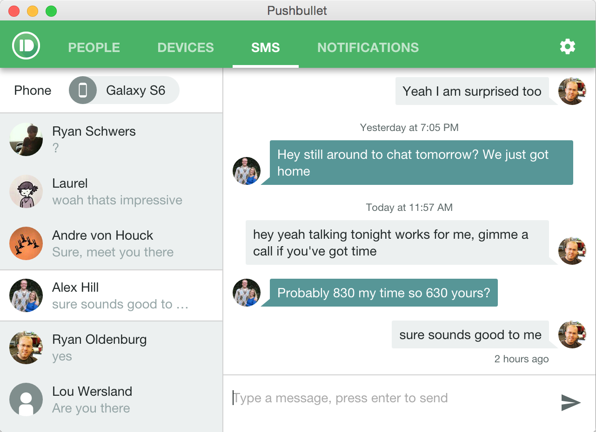

Android users—texting with Pushbullet just got a lot better!
Get the Android update on the Play Store now (needed for new features).
Instead of replying to individual messages, Pushbullet now has a full messaging experience for SMS that’s completely synced with your phone. This means you can comfortably text from your PC while at work, then pick up the conversation later on your phone and all of your messages will be right where you expect them to be.
